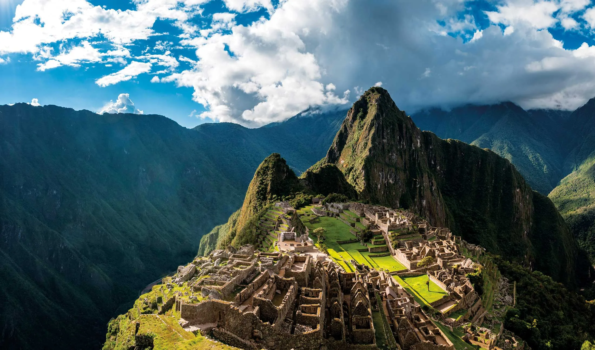

南米旅行
南米旅行記

マチュピチュ
ペルーのアンデス山脈にある 世界遺産マチュピチュ。 壮大な景色が広がっています。
ウユニ塩湖
ボリビアにあるウユニ塩湖。 雨季には水面に空が映り込む 鏡張りの景色で有名です。
旅のまとめ
南米には魅力的な自然や文化が たくさんあります。 これから旅行の記録を追加していきます。
← トップページに戻る世界を旅する記録
南米旅行記

ペルーのアンデス山脈にある 世界遺産マチュピチュ。 壮大な景色が広がっています。
ボリビアにあるウユニ塩湖。 雨季には水面に空が映り込む 鏡張りの景色で有名です。
南米には魅力的な自然や文化が たくさんあります。 これから旅行の記録を追加していきます。
← トップページに戻る